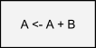
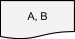

Pseudocódigo
Un pseudocódigo es un lenguaje genérico independiete de cualquier lenguaje que sirve para representar un algoritmo. Tiene como objetivo se fácilmente traducido a un programa en cualquier lenguaje de programación. A continuación se presentan ejemplos entre algunos símbolos del diagrama de flujo y su equivalencia en pseudocódigo.
| Símbolo | Instrucción | Diagrama de Flujo | Pseudocódigo |
|---|---|---|---|
Leer |
Leer A, B, C | ||
 |
Hacer |
 | Hacer A <- A + B |
Escribir. |
 | Escribir A, B |
Ejercicios
Ejercicio 1. Realice el pseudocódigo de un algoritmo que convierta su edad en segundos. El algoritmo debe recibir como datos de entrada los años, meses y días de su edad y calcular la cantidad de segundos que usted haya vivido.
Leer a, m, d
Hacer d <- d + a * 365
Hacer d <- d + m * 30
Hacer r <- d * 86400
Escribir r
Ejercicio 2. Realice el pseudocódigo de un algoritmo que calcule la distancia entre dos puntos, tomando como datos de entrada las coordenadas de los puntos P1 y P2.
Ejercicio 3. Realizar el pseudocódigo de un algoritmo que calcule el promedio de las 5 calificaciones de un alumno.
Ejercicio 4. Realizar un pseudocódigo del algoritmo que resuelve una ecuación de segundo grado mediante la fórmula general.
Estructura Condicional
Las estructuras lógicas selectivas se encuentran en la solución algorítmica de casi todo tipo de problemas. Las utilizamos cuando en el desarrollo de la solución de un problema debemos tomar una decisión, para establecer un proceso o señalar un camino alternativo a seguir.
Esta toma de decisión se basa en la evaluación de una o más condiciones que nos señalarán como alternativa o consecuencia, la rama a seguir.
Hay situaciones en las que la toma de decisiones se realiza en cascada. Es decir, se toma una decisión, se marca la rama correspondiente a seguir, se vuelve a tomar otra decisión y así sucesivamente. Por lo que para alcanzar la solución de un problema o subproblema debemos aplicar prácticamente un árbol de decisión.
La estructura si entonces permite que el flujo del diagrama siga un camino específico si se cumple una condición o un conjunto
de condiciones. Si al evaluar la condición el resultado es verdadero se ejecuta(n) cierta(s) operación(es). Esta estructura se dice que
es binaria dado que solo tiene dos posibles respuestas: si o no.
si "condicion" entonces
accion(es)
sino si "condicion" entonces
accion(es)
sino si "condicion" entonces
accion(es)
finsi
Ejercicio
Ejercicio 5. Realizar un pseudocódigo de un algoritmo que solicite un número al usuario y determine si este número es positivo, negativo o cero.
Estructura Condicional Múltiple
La estructura selectiva permite que el flujo del diagrama se bifurque por varias ramas en el punto de la toma de decisión(es), esto en función del valor que tome el selector. El selector múltiple, a diferencia del selector simple, no es binario sino que tiene 3 o más posibles ramas para la decisión.
si "selector" igual
valor 1: accion(es)
valor 2: accion(es)
valor 3: accion(es)
...
Otro Valor: accion(es)
finsi
Este tipo de selector permite elegir entre un número determinado de posibilidades, un número discreto (finito) de ellas. Por esta razón es que si se necesita evaluar un conjunto contínuo (infinito) de posibles valores, este tipo de selector no es apropiado para ello.
Ejericio
Ejercicio 6. Realice un pseudocódigo que solicite dos números cualesquiera, luego debe pedirse un número que seleccionará alguna operación aritmética. Si introduce 1 los números se deben sumar, si introduce 2 los números se deben restar, si es 3 los números se multiplican y si introduce 4 los números se dividen. Independientemente de la selección, imprima el resultado.
Estructuras Algorítmicas Repetitivas
En la construcción de algoritmos para resolver un problema específico es muy común encontrarse con la necesidad de repetir alguna operación
para la realización de esa tarea. En dicha repetición, que a partir de ahora llamaremos iteración, puede ser necesario resolver
alguna(s) operación(es) aritmética(s) o la evaluación de alguna decisión. En cualquier caso se necesitan de las estructuras algorítmicas repetitivas.
Todo ciclo debe terminar de ejcutarse luego de un número finito de iteraciones, por lo que es necesario verificar la(s) condición(es) en cada iteración para determinar si se debe continuar la ejecución o detenerse.
De esta forma todos los ciclos tienen estos tres elementos:
- Condición Inicial (CI): Es el punto de partida del ciclo, debe ser una condición verdadera para que el ciclo pueda iniciar.
- Condición Final (CF): Establece el punto final del ciclo, una vez que se cumpla la condición el ciclo deberá terminar.
- Incremento/Decremento/Cambio: Es el cambio de las variables que controlan el ciclo. El cambio puede ser un incremento, decremento o alguna otra condición.
-
Estructura Repetitiva
repetirLa estructura
repetirconocida comúnmente comofor, es la estructura algorítmica cuya característica principal es que se sabe de antemano el número de iteraciones que ocurrirán. Este tipo de estrcutura está presente en todos los lenguajes de programación.El pseudocódigo de la estructura
repetires el siguiente:Hacer i <- CI Repetir con i desde CI hasta CF accion(es) Hacer i <- i + incremento/decremento/cambio finRepetirPara utilizar este ciclo se debe establecer un punto de partida, un fin y como se progresará desde el inicio al final; es decir, una condición incial, una condición final y un cambio. Como se sabe toda esta información de antemano, por lo tanto se sabe el número de iteraciones que realizará el ciclo. El control de las iteraciónes lo realiza una
variable de control.Para comenzar el ciclo, la variable de control toma el valor establecido en la condición inicial y se evalúa contra la condición final, y si el resultado de dicha evaluación es verdadero se realiza una iteración del ciclo. Dentro del ciclo hay una o muchas operaciones que se pueden llevar a cabo, y al final de todas ellas debe ocurrir un incremento, decremento o un cambio en la variable que controla el ciclo.
Por ejemplo, considere que existe una
operación Xque necesita ser realizada 10 veces. Debemos definir la variable de control del ciclo, digamosi. Dicha variableideberá contar el número de iteraciones, es decir, deberá comenzar con un valor de 1 y terminará cuando valga 10. Por lo tanto, la condición inicial esi=1, la condición finali=10y el cambio de la variable es un incremento en 1.El pseudocódigo correspondiente es el siguiente:
Hacer i <- 1 Repetir con i desde 1 hasta 10 Hacer "operacion X" Hacer i <- i + 1 finRepetirObserve que la condición final se estableció como
i<=10siendo quizás la manera más obviai!=10, para entender el porque considere lo siguiente. Dado que la variableicomienza en1y el incremento también es en1, todos los valores que tomará la variableidentro del ciclo son menores o iguales que10, razón por la cual se establece de esa forma.Considere además que si pusieramos como condición
i!=10el ciclo funcionaría de manera idéntica para este ejemplo, pero si por alguna razón en algún momento de la ejecución del ciclo la variableitomara un valor distinto a los esperados, no tendríamos forma de saberlo y esto ocasionaría que el ciclo se comportara de maneras inesperadas. Este tipo de situaciones son comunes sobre todo cuando los algoritmos son más complejos y existen más operaciones dentro del ciclo. Por esta razón es más conveniente optar por esta convención ya que nos evitará problemas en el futuro. -
Estructura Repetitiva
MientrasLa estructura
mientrasconocida comúnmente comowhile, es la estructura algorímtica cuya característica principal es que no se sabe de antemano el número de iteraciones que ocurrirán. Esta estructura también se encuentra presente en todos los lenguajes de programación.El pseudocódigo de la estructura
mientrases el siguiente:Hacer i <- CI Mientras condicion != CF Hacer Operaciones Hacer Cambio finMientrasPara utilizar este ciclo se debe establecer un punto de partida y un final; es decir, una condición incial y una condición final. El control de las iteraciónes lo realiza una
variable de control. Para comenzar el ciclo la variable de control toma el valor de la condición inicial y en cada iteración se evalúa esta variable de control contra la condición final. El ciclo realizará iteraciones mientras tal evaluación sea verdadera.A diferencia de
repetir, en el ciclomientrasno se sabe necesariamente con exactitud como cambia la variable de control, lo que si se debe saber con precisión es donde comienza el ciclo y donde termina. Por lo tanto, como no se sabe toda esa información, tampoco se sabe el número de iteraciones que realizará el ciclo.
Ejericios
Ejercicio 7. Realice un pseudocódigo del algoritmo que suma los primeros 100 números enteros.
Ejercicio 8. Construya un pseudocódigo de un algoritmo que solicita números al usuario y haga la suma de todos ellos. El algoritmo debe solicitar números siempre y cuando el número ingresado sea positivo, si el usuario ingresa un número no positivo el algoritmo debe terminar e imprimir la suma de los números positivos.